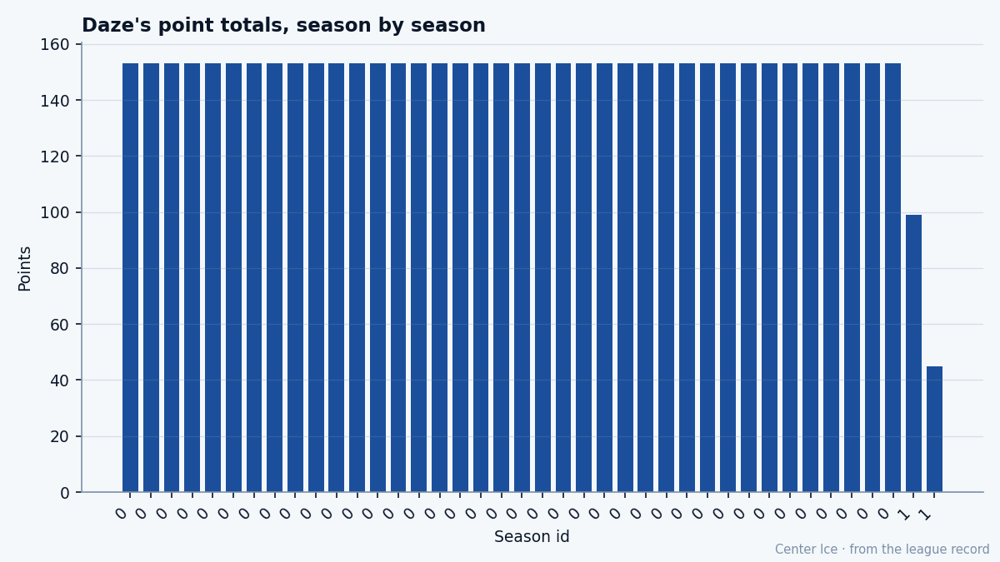

The Pick That Came With Hašek: Eric Daze, 99 points, and a GM who cannot decide
The 90th overall selection from the 1993 draft has been in Chicago since March 1995. The Book says he is past his ceiling. His GM says he is listening to calls.
 Tomáš VránaProfile writer · The Sweater
Tomáš VránaProfile writer · The Sweater Eric Daze87 has 99 points in 60 games for the
Eric Daze87 has 99 points in 60 games for the  Chicago Blackhawks, who sit last in the Central with 51 points and are on a five-game losing streak. His contract pays $3.00M with 1 year left. The Chicago Blackhawks GM, Jason Hughes, told The Tunnel's Jan Kowalczyk this week that he is fielding calls about him.
Chicago Blackhawks, who sit last in the Central with 51 points and are on a five-game losing streak. His contract pays $3.00M with 1 year left. The Chicago Blackhawks GM, Jason Hughes, told The Tunnel's Jan Kowalczyk this week that he is fielding calls about him.
The draft line reads 1993 #90 (R3). The background sheet carries the route: the Blackhawks received that pick with Stéphane Beauregard in exchange for Dominik Hašek. A kid from Laval, Quebec AAA Midget. Traded from Hull to Beauport in the QMJHL. Fifty-nine goals in 66 games with Beauport in 1993-94. QMJHL First All-Star Team. CHL Top Prospect Award. Signed in March 1995. He has not worn another sweater in the league.
He scored at least 20 goals every season between 1996 and 2003. Last year he scored 70 and put up 153 points in 74 games, third in the league behind  Glen Murray79 and
Glen Murray79 and  Ryan Smyth86. This year he has 43 goals and 56 assists in 60 games, a pace of 135.3. The Development Index has him at 0, no change. His base grade is 89. His overall reads 87. The Bureau has his potential at 78.
Ryan Smyth86. This year he has 43 goals and 56 assists in 60 games, a pace of 135.3. The Development Index has him at 0, no change. His base grade is 89. His overall reads 87. The Bureau has his potential at 78.
The Bureau says the man is 11 grades above the ceiling it wrote for him when he was a teenager in Beauport, and the gap will only grow from here. The overall is already 2 below the base. He is 29. The Book does not see a way back up.
But the room disagrees. The Chicago Blackhawks dressing room has morale 96. Every man the desk pulled carried it. Daze at 96.  Jocelyn Thibault90 at 96.
Jocelyn Thibault90 at 96.  Theoren Fleury86 at 96, though Fleury is out with a knee until March 20 and Daze is the best skater available.
Theoren Fleury86 at 96, though Fleury is out with a knee until March 20 and Daze is the best skater available.  Alexei Zhamnov85 at 96.
Alexei Zhamnov85 at 96.  Steve Sullivan85 at 96.
Steve Sullivan85 at 96.  Mark Bell82 at 96.
Mark Bell82 at 96.  Kyle Calder80 at 96. Michael Leighton at 96.
Kyle Calder80 at 96. Michael Leighton at 96.
"Morale's where it is for a reason," Hughes said. "Daze at 96, Thibault at 96, that's not nothing."
He is right that the locker room holds. He is also the man who has to figure out what to do with a 29-year-old left winger whose best season is already behind him, whose team is 30 points back of first in the division, and whose $3.00M cap hit would be a rounding error on any contender.
"Daze is playing at a level right now, 96 points, the highest he's ever been. If we're talking about a window where we're actually competitive, I want him here," Hughes said. "But I'm not competitive right now."

The prestige sits at 427. The operation is profitable. None of that helps a 90th-pick kid from Laval who scored 20 a year for eight straight seasons, who scored 70 in one season, and who is now the entire point of a franchise that has won 18 games and lost 30.
The trade deadline is 28 days away.
Daze's grades tell the story the Bureau tells: shot power 94, hero 93, deception 91, puck control 91, checking 88, speed 88. His fight grade is 50. His faceoff grade is 51. His breakout pass is 52. He is a pure scorer who cannot win a draw and will not drop the gloves. On a first line, that works. On a last-place team where the rest of the forward group tops out at 82 and 80, it means he touches the puck, carries it, and puts it near the net with nobody else on the page.
Thibault at 90 is the only man on the roster rated higher. Thibault is 34. Fleury at 86 is the next skater up, out until late March. Zhamnov and Sullivan at 85 are both on the wrong side of 30. The depth runs to Bell at 82 and Calder at 80. Below them, the record thins fast.
Hughes said he is "not sitting back waiting for somebody to call me with a fire-sale offer on a piece I want to keep." He wants to keep Daze. He is also last in his division, 25 back of someone, profitable enough to take a call. The deadline arrives on March 19. The contract dies in July. If Chicago holds, they will re-sign a 30-year-old coming off a 99-point season with a ceiling the Bureau says is 78. If they trade him, they get something for a piece that will be free in five months, and the dressing room drops from a 96 to whatever replaces a man who has been here since 1995.
Hughes said: "You don't build a club in a season."
The 90th pick from the Hašek deal scored 153 points last year and is scoring at a pace of 135 this year. The ceiling is 78. The floor is $3.00M. The team wins 18. The phone rings.